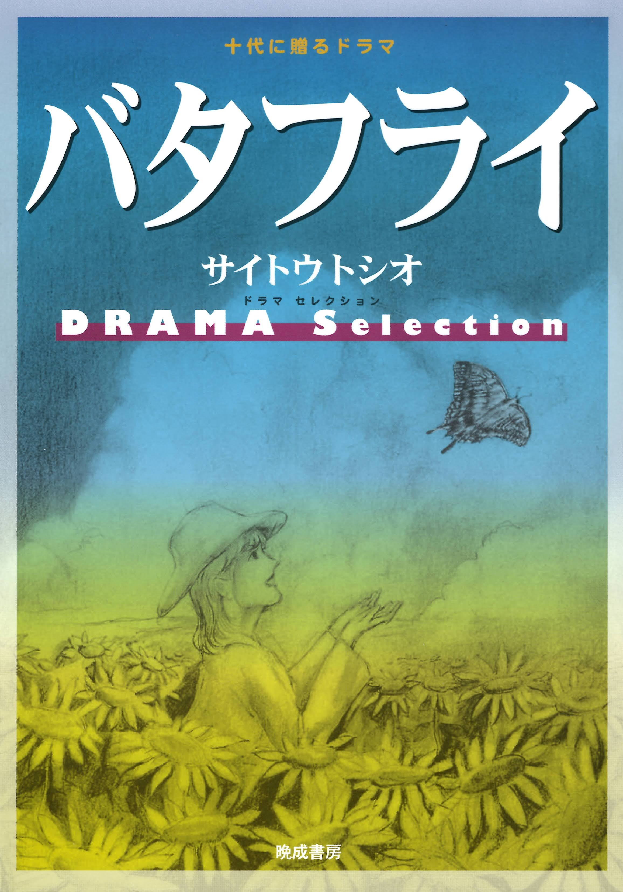
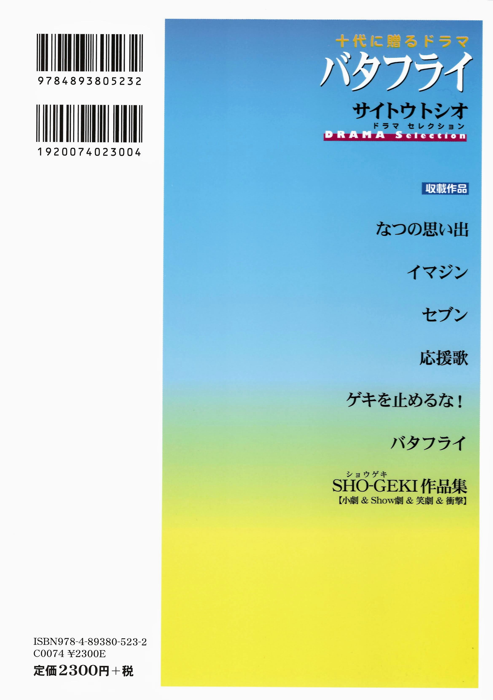
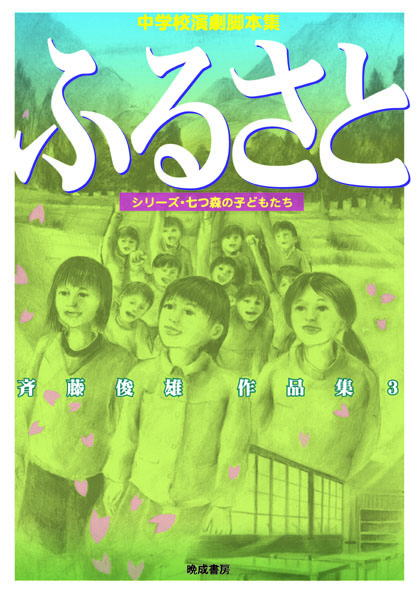
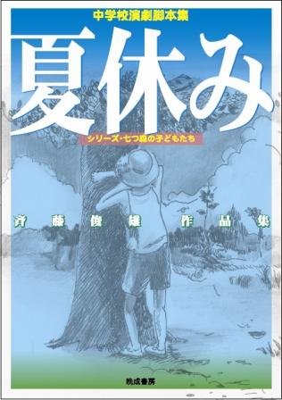
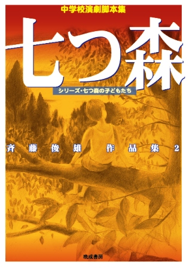
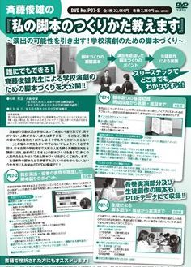
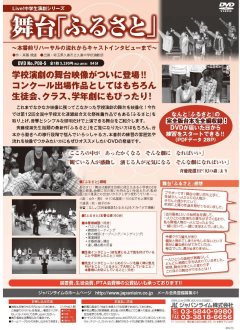
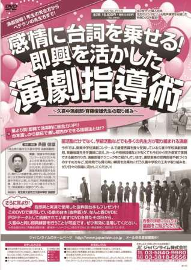

お問い合わせはoo-ruri@nifty.com
| 2024.6.10New |
七つ森は中学生が演じたときにもっとも輝くことができる劇づくりの取り組みを扱った中学校演劇、中学生のための脚本のサイトです。
★中学生のだれもが、計り知れない可能性を持っていると(とりあえず人前ではそう言っているのではなく) 本気で思っている人(思いたい人)。そして中学生は、中学生にしては素晴らしい劇などではなく、プロの劇団にも負けない大きな感動を生み出す劇を上演することができると本気で思える人
「七つ森」はそんな方々のためのサイトです。そして、「七つ森」は中学生演劇を全力で応援しているサイトです。
十代に贈るドラマ「バタフライ」サイトウトシオ ドラマセレクション 晩成書房から出版

サイトウトシオ４作目の作品集「バタフライ」が２０２４年３月に晩成書房から発売となりました。
なつの思い出 ……太平洋戦争が終わって４年後の１９４９年(昭和２４年)のドラマです。
最新中学校創作脚本集２０１８収録作品 神奈川全国大会参加作品
イマジン ……アメリカ同時多発テロ事件が起きた２００１年のドラマです。
中学校創作脚本集２０１９収録作品 富山全国大会参加作品
セブン ……ボブ・ディランがノーベル文学賞を受賞した２０１６年のドラマです。
中学校創作脚本集２０２４収録予定作品 沖縄全国大会参加作品
応援歌 ……新型コロナウィルス感染拡大阻止のため全国の学校が休校となった２０２０年のドラマです。
中学校創作脚本集２０２１収録作品 岩手全国大会参加作品
ゲキを止めるな！……コロナウィルス感染拡大阻止のために緊急事態宣言が複数回出された２０２１年のドラマです。
中学校創作脚本集２０２０収録作品 福岡全国大会参加作品
バタフライ ……ロシアがウクライナに侵攻した、２０２２年とその前後のドラマです。
中学校創作脚本集２０２３収録作品
SHO-GEKI作品集 ……小劇＆Show劇＆笑劇＆衝撃の短い作品集です
中学校創作脚本集２０２２収録作品
news 斉藤俊雄作品集３「ふるさと」 晩成書房から出版されました
◆「ふるさと」斉藤俊雄作品集３
表紙絵・石川典嗣
収録作品は次の７作品です
題名をクリックするとあらすじを読むことができます。また脚本を途中まで読むことができます。
「ふるさと」
「アトム」
「Happy Birthday」
「赤と青のレクイエム」
「夏休み」〜戦後七十年改訂バージョン〜【戦争三部作】
「私の青空」〜「青空」 戦後七十年バージョン〜【戦争三部作】
「ずっとそばにいるよ」【戦争三部作】
◆◆◆
「演劇と教育」２０１６年１０月号
本 新刊-旧刊 斉藤俊雄作品集３「ふるさと」 書評
◆◆◆
※戦争三部作はそれぞれが繋がりを持っている作品です。「夏休み」は昭和１１年の小学６年生の眼差しで、これから起こる太平洋戦争戦争を描いた作品です。「私の青空」と「ずっとそばにいるよ」は現代の中学生の眼差しで過去に起こった太平洋戦争を描いた作品です。
★「ふるさと」はどのような思いから生まれたのか
過去に自作を上演してくれた学校の一つが、津波の被害にあったことを知りました。その日から考え始めました。「自分に何かできることはないいだろうか。自分だからこそできることはないだろうか」と。そして、辿り着いたのが「ふるさと」です。
上演した人たちが元気になれる劇が創りたいと思いました。観た人が元気になれる劇、そして、そのことによって上演した人が元気になれる劇です。
「ふるさと」は古川里美（＝ふるさと）が転校してきたことで、故郷に特別な思いを持っていなかった子ども達全員が故郷を好きになる話です。内容に震災をイメージさせる部分はあえて入れませんでした。ただただ「あったかい劇になればいい」という思いを胸に創りました。
「ふるさと」は演劇部でも学級劇でも学校劇でも上演できる、小学生でも中学生でも地域の子どもたちの集まりでも上演できる、教室でも体育館でもホールでも、更に校庭でも上演できる劇です。
「ふるさと」がどのようにして生まれどのような道を歩いてきたのか興味がある方は、後書きをお読みください。
◆後書き 「ふるさと」の後書きという名の劇
★岩手県大船渡市立赤崎中が「ふるさと」を上演した時の新聞記事は ここをクリック 。
★ 「演劇と教育」２０１６年１１月号 実践記録 「ふるさと」とともに歩く 斉藤俊雄
◆購入を希望する方は、晩成書房、 楽天、 7net 、一般の書店への注文で購入できます。
news斉藤俊雄作品集「夏休み」 晩成書房から重版開始となりました
『夏休み〜シリーズ・七つ森の子どもたち〜斉藤俊雄作品集』
しばらくの間、品切れとなっていましたが、２０１６年１０月、重版開始となりました。品切れの間はネットで作品の提供を行ってきましたが、重版開始となりましたので、今後は晩成書房から購入していただければと思います。
◆下の題名をクリックすると、「斉藤俊雄作品集 夏休み」収録作品のあらすじと脚本を途中まで読むことができます。
「夏休み」
「青空」
「なっちゃんの夏」
「ときめきよろめきフォトグラフ」
「降るような星空」
「春一番」
・「斉藤俊雄作品集 夏休み」後書き 春一番が吹いた日に〜後書きのためのインタビュー〜 この作品集がどのような思いから作られたのか、架空のインタビュー形式で紹介します。これを読むことで、
サブタイトルにある「シリーズ・七つ森の子どもたち」の意味を理解していただけると思います。
◆購入を希望する方は晩成書房、 7net 、一般の書店への注文で購入できます。
news新着情報 出版関係
『七つ森〜シリーズ・七つ森の子どもたち〜斉藤俊雄作品集２』

『七つ森〜シリーズ・七つ森の子どもたち〜斉藤俊雄作品集２』 が２０１１年１１月２１日に晩成書房から出版されました。収録されているのは次の６作品です。(下の作品名をクリックすると、作品の紹介と脚本の前半部分を読むことができます)
『七つ森』
『とも』
『ザネリ』
『怪談の多い料理店』
『魔術』
『森の交響曲(シンフォニー)』
「七つ森」の６作品がどのようにして生まれたかに興味がある方は後書きをお読みください。
後書き
「七つ森 いきものがたり」
◆購入を希望する方は晩成書房、 楽天、
7net 、一般の書店への注文で購入できます。
NEWS 架空脚本講座「子どものための脚本の書き方」
-
架空脚本講座
「子どものための脚本の書き方〜七つ森の子どもたちを通して〜」
◆2012年演劇と教育10月号(晩成書房)に掲載されました。読みたい方は次をクリック→●
■プロローグ ■はじめに演劇部員ありき
■はじめに演劇部員ありき
■涙
■保護者ありき
■中学校の教師が書く脚本
■はじめにイメージありき
■登場人物決定と登場人物表
■アイディアノートと資料集め
■プロットとトンネル
■４色ボールペン
■声に出す
■第１稿の配布
■第２稿から最終稿へ
■行き詰まったら
■エピローグ
news新着情報 演劇指導DVD関係
「斉藤俊雄の 私の脚本のつくりかた教えます
〜演出の可能性を引き出す！学校演劇のための脚本づくり〜」
ジャパンライム社から2012年10月18日に発売となりました。
(以下…ジャパンライム株式会社のホームページからの引用) ☆誰にでもできる！斉藤俊雄先生による学校演劇のための脚本づくりを大公開!! ☆脚本づくりの基礎基本→演出を意識した脚本づくりのポイント→生徒創作による実践！ スリーステップでどこまでもわかりやすい！ ☆書籍で挫折された方にもオススメします！ ☆各巻実演部分及び生徒創作の脚本もPDFデータにて収録!!
--------------------------------------------------------------------------------
演劇部の活動状況は学校によって本当に千差万別です。男子がいない、人数が少ない、または多すぎる……などなど、「既存の脚本では無理だ！創作しよう！でも作り方がわからない……」とお悩みの先生も多いのではないでしょうか。そこで今回は、日本全国の学校現場で大変な人気を誇る斉藤俊雄先生を講師に迎え、最新作『ふるさと』の脚本づくりを通して、『春一番』、『青空』、『ときめきよろめきフォトグラフ』など多くの人気作品を生み出してきた脚本づくりを詳しくご紹介します。 ネタ集めや構成の方法などの基本項目はもちろん、オープニングや舞台転換等の演出を踏まえた演出方法、さらには実際に生徒が創作した作品を推敲し上演する実践段階までしっかりとご紹介しておりますので、これから演劇を始められる方でも非常にわかりやすくご覧いただけるでしょう。 生徒創作の脚本を評価すればいいのかわからない、という先生方にもお勧めのDVDの登場です！
ジャパンライム社のサイトでの紹介 Amazonでも購入できます。
Live 中学校演劇シリーズ 舞台「ふるさと」
(作・斉藤俊雄 上演・久喜中学校演劇部)
ジャパンライム社から2012年10月18日に発売となりました。
(以下…ジャパンライム株式会社のホームページからの引用)
これまでなかなか映像に残ってこなかった学校演劇の舞台を映像化！ 今作では第12回全国中学校文化連盟総合文化祭推薦作品でもある『ふるさと』を取り上げ、音響とシンプルな照明だけで上演できる舞台をご紹介します。 斉藤俊雄先生話題の最新作「ふるさと」をご覧になりたい方はもちろん、台本から動きへの移行段階で悩んでいらっしゃる方、本番前の練習の雰囲気や流れを映像でつかみたい方にもぜひオススメしたいDVDの登場です。
学校演劇の舞台映像がついに登場!! コンクール出場作品としてはもちろん生徒会、クラス、学年劇にもぴったり！
−−−−−−−−−−−−−−−−−−−−−−
なんと『ふるさと』の完全版台本を全編収録！ DVDが届いた日から練習をスタートできる!!(PDFデータ28P）
ジャパンライム社のサイトでの紹介 Amazonでも購入できます。「感情に台詞を乗せる！即興を生かした演劇指導術 〜久喜中演劇部・斉藤俊雄先生の取り組み〜」
久喜中演劇部で行っている劇のつくり方を紹介するDVDが、ジャパンライム株式会社から発売されました。(以下…ジャパンライム株式会社のホームページからの引用)
指導用DVDのパイオニア、ジャパンライムから、待望の演劇指導DVDがついに登場！
これまで多くの部活動指導DVDを制作し、ご好評をいただいてまいりましたが、演劇部の指導用DVDだけは多くのご要望をいただきながらも、実現までたどり着くことができないままでおりました。 「ほんとうに先生方に役立てていただけるものができるのか？」 これまでにないジャンルであったため、いくつもの企画案が社内プレゼンを通過できず消えていきました。苦節数年、多くの先生方にお話を伺いながら企画のブラッシュアップを行い、ついに演劇部の先生がたのニーズに見合ったDVDが完成いたしました！ その名も…
『感情に台詞を乗せる！即興を活かした演劇指導術
〜久喜中演劇部・斉藤俊雄先生の取り組み〜』
関東中学校演劇コンクールで最優秀賞を度々受賞している久喜中学校演劇部顧問、斉藤俊雄先生を講師に迎え、ホールや照明設備などがなくても今日から空き教室で実践できる劇づくりと、時間のない先生方にもすぐに役立てていただける演劇指導テクニックをご紹介しています。
◆ 台本渡しから数日で通し稽古ができる指導法とは、果たしてどのようなものなのか？
◆喜怒哀楽の即興指導や劇づくりのすすめ方
など、短時間でも質の高い練習を効果的に行う久喜中学校の工夫や取り組みを、ぜひ日々の指導に活かしてください！
尚、今作では晩成書房様の多大なるご協力をいただき、このDVDで使用している劇の台本データ（抜粋版）を収録いたしております。台本などを取り寄せることなく、DVDを見たその日から久喜中と同じ即興練習を行うことが可能です。ぜひ有効に活用してください。
●詳しくはジャパンライム株式会社のホームページを見てください。